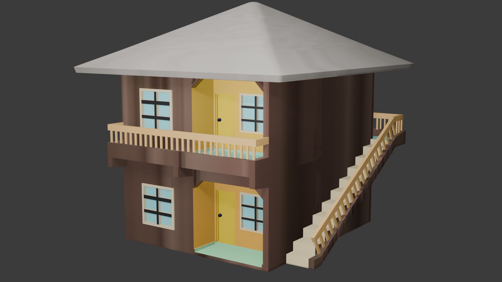
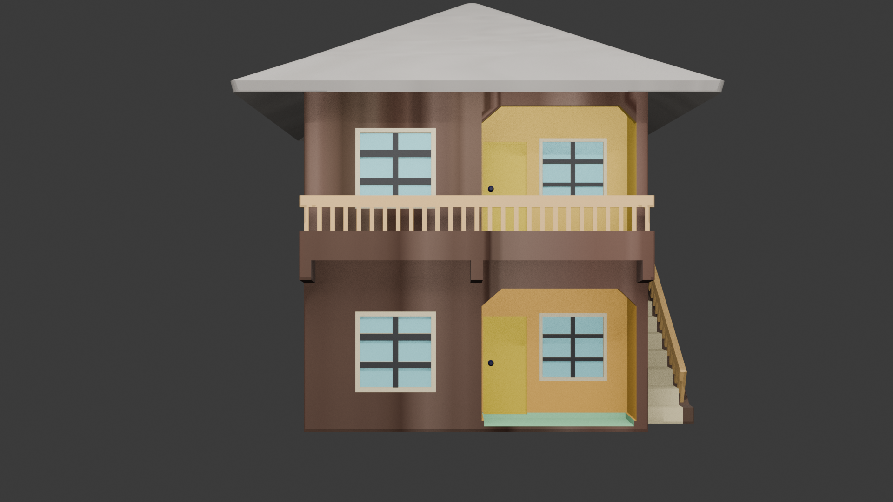
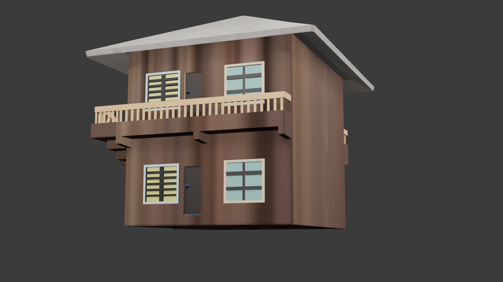
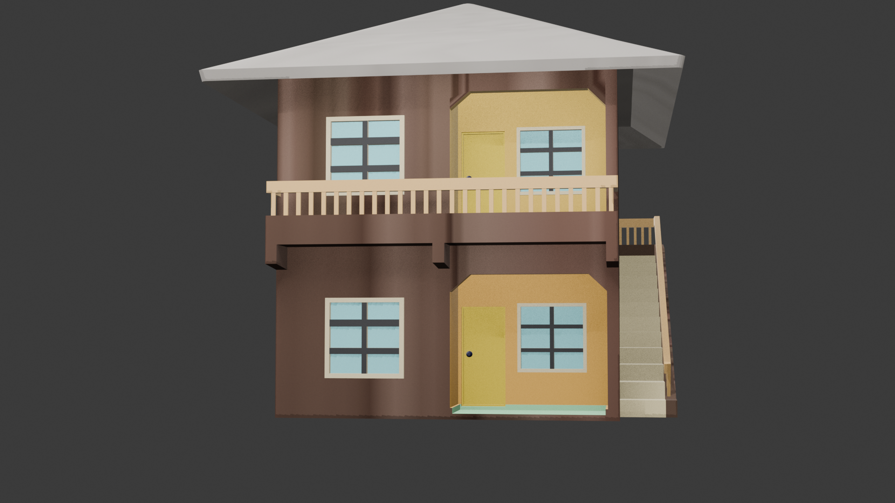
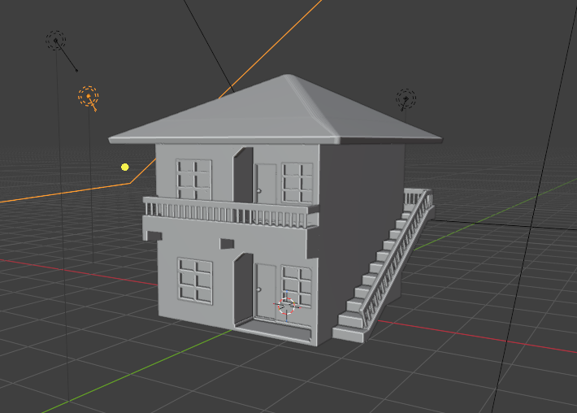
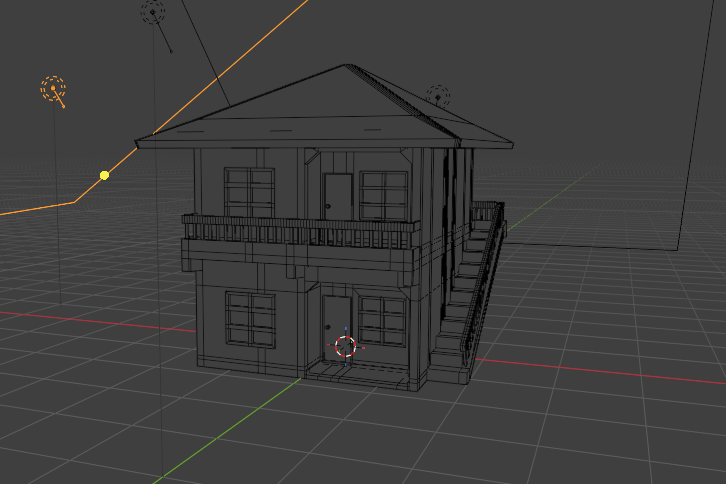
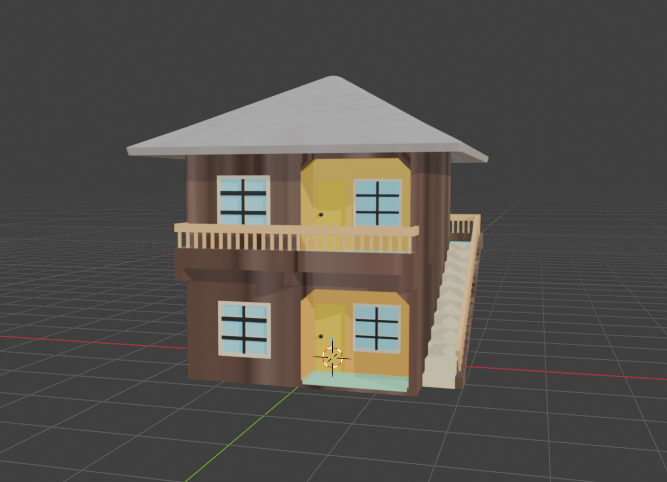
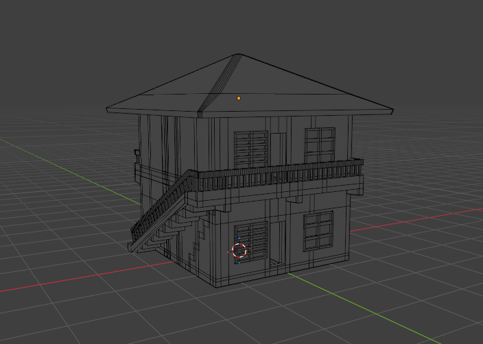
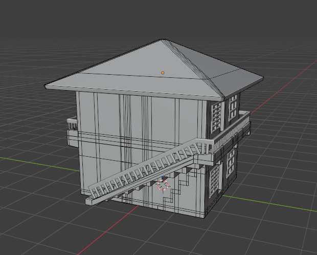

PROJECT / 002 · ARCHITECTURAL MODELING
Two-Storey House Study
A Blender architectural modeling study of a two-storey residential building. The model includes a broad hipped roof, front balconies, exterior staircase and railings, doors, and framed windows. The gallery shows rendered views alongside viewport and wireframe references.









Project video / walkthrough
Video link for Two-Storey House Study
Modeling focus
The main focus of this study is the building's overall form and exterior features: the roof silhouette, repeated windows and doors, balcony balustrades, and the staircase connecting the levels. The viewport images provide additional context for the underlying model.
Presentation
The colored views help communicate the exterior materials and layout, while the wireframe views reveal the model structure. Further polish could include a more refined lighting setup, a surrounding environment, and additional close-up views of key architectural details.